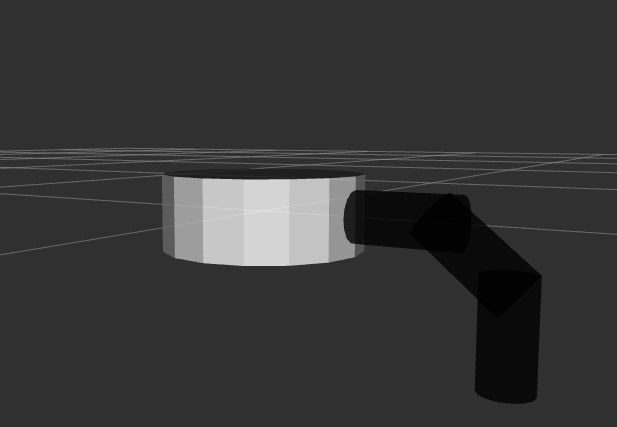
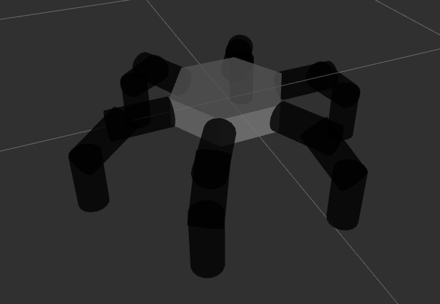
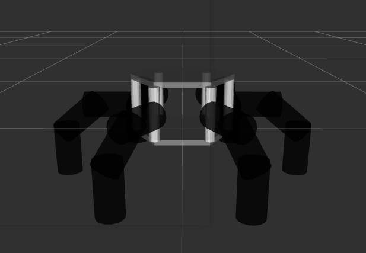
6-legged spider robotfavorite
ณ ปัจจุบัน ดิฉันศึกษาอยู่ชั้นปีที่ 4 ดิฉันได้มีความสนใจทางด้านเกี่ยวกับซอฟต์แวร์ และหุ่นยนต์
URDF
(Unified Robot Description Format) คือ รูปแบบไฟล์ XML
ที่ใช้สำหรับการจำลองโมเดลหุ่นยนต์ขึ้นมาเพื่ออธิบายลักษณะกายภาพของตัวโมเดลไม่ว่าจะเป็น สี พื้นผิว ตำแหน่ง
โดยจะมีการเชื่อมต่อส่วนประกอบต่างๆโดยใช้ Link และ Joint
โดยเริ่มต้นจากการสร้างแบบจำลองโมเดลจาก
1 ขา และแบบ 6 ขาที่มีฐานเป็นแบบหกเหลี่ยม และแบบ 6
ขาที่มีฐานตามต้นแบบจริง ซึ่งประกอบไปด้วยส่วนประกอบต่างๆดังนี้
ส่วนประกอบโมเดลแมงมุม 6 ขา
- base_link (ฐานเป็นรูปวงกลม)
- 1_leg (ขาที่ 1 ตำแหน่งบนติดกับตัวฐาน)
- 2_leg (ขาที่่ 2 ตำแหน่งขาตรงกลาง)
- 3_leg (ขาที่่ 3 ตำแหน่งขาล่างสุดติดกับพื้น)
- base_joint (ข้อต่อตัวฐาน)
- base_2_joint (ข้อต่อขาที่ 1-2)
- base_3_joint (ข้อต่อขาที่ 2-3)
โมเดลแมงมุม 1 ขาgrade
โมเดลแมงมุม 6 ขา (ฐานหกเหลี่ยม)grade
-
base_link (ฐานเป็นรูปหกเหลี่ยม)
-
1_leg (ส่วนประกอบขาที่ 1 ตำแหน่งบนติดกับตัวฐาน)
-
2_leg (ส่วนประกอบขาที่่ 1 ตำแหน่งขาตรงกลาง)
-
3_leg (ส่วนประกอบขาที่่ 1 ตำแหน่งขาล่างสุดติดกับพื้น)
-
base_joint (ข้อต่อตัวฐาน)
-
base_2_joint (ข้อต่อตำแหน่งที่ 1-2)
-
base_3_joint (ข้อต่อตำแหน่งที่ 2-3)
โมเดลแมงมุม 6 ขา (ฐาน 6 เหลี่ยมตามต้นแบบ)grade
-
base_link (ฐานเป็นรูป 6 เหลี่ยมด้านบน)
-
base_link (ฐานเป็นรูป 6 เหลี่ยมด้านล่าง)
-
cylinder_1 (ฐานทรงกระบอกไว้ยืดติดกับตัวฐาน)
-
1_leg (ส่วนประกอบขาที่ 1 ตำแหน่งบนติดกับตัวฐาน)
-
2_leg (ส่วนประกอบขาที่่ 1 ตำแหน่งขาตรงกลาง)
-
3_leg (ส่วนประกอบขาที่่ 1 ตำแหน่งขาล่างสุดติดกับพื้น)
-
cy_1 (ข้อต่อสำหรับยึดฐาน)
-
base_joint (ข้อต่อตัวฐาน)
-
base_2_joint (ข้อต่อตำแหน่งที่ 1-2)
-
base_3_joint (ข้อต่อตำแหน่งที่ 2-3)
สำหรับโมดลแมงมุม 6 ขาทั้งสองแบบส่วนที่เหมือนกันคือ จำนวนขาทั้งหมด 6 ขา และมีส่วนประกอบของขาทั้งหมด 18 ชิ้นส่วน และมีข้อต่อ (joint) 18 จุด แต่สิ่งที่แตกต่างคือ สำหรับฐานรูปหกเหลี่ยมเหมือนต้นแบบ มีฐานทรงกระบอกทั้ง 6 ตำแหน่งที่ถูกยึดด้วยข้อต่ออีก 6 จุด
โมเดลหุ่นยนต์แมงมุม 1 ขาfavorite
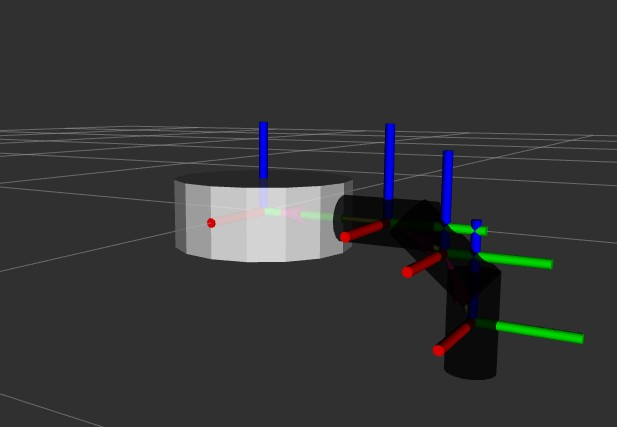
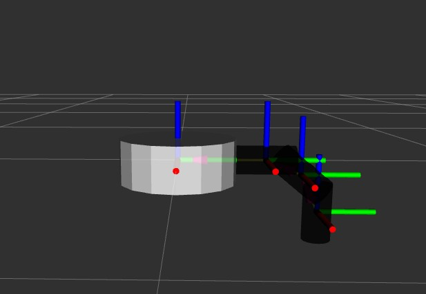
สำหรับโมเดลแมงมุมหุ่นยนต์ โดยเริ่มศึกษาจาก 1 ขาก่อนพบว่า
การขยับของส่วนประกอบขานั้นไม่เหมือนกันในการเคลื่อนที่
ดังนั้นแต่ละส่วนประกอบจะมีมุมและองศาในการขยับที่แตกต่างกัน
ส่วนประกอบตำแหน่งที่ 1
-
หมุนตามแกน Z
ส่วนประกอบตำแหน่งที่ 2 และ 3
-
หมุนตามแกน x
โมเดลหุ่นยนต์แมงมุม 6 ขา (ฐานหกเหลี่ยม)favorite
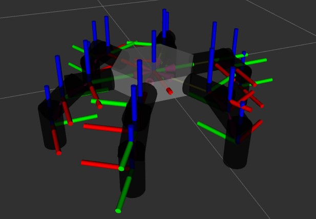
สำหรับโมเดลแมงมุมหุ่นยนต์ 6 ขาฐานหกเหลี่ยม ซึ่งนำเข้าจากโปรแกรม
Blender และส่งออกเป็นไฟล์ urdf
เพื่อจำลองบน Rviz สิ่งที่เพิ่มขึ้นมาคือการเพิ่มขาอีก 5 ขาเข้าไป
และเปลี่ยนรูปทรงของฐานจากวงกลมเป็นฐานหกเหลี่ยม
โดยเพิ่มเติมจากการศึกษา 1 ขาก่อนหน้าพบว่า
การขยับของส่วนประกอบขาทั้งหมดนั้นจะไม่เหมือนกันในการเคลื่อนที่
ดังนั้นแต่ละส่วนประกอบจะมีมุมและองศาในการขยับที่แตกต่างกัน
และตำแหน่งของขาที่เหลือตามมุมต่างๆของฐานที่แตกต่างกัน
ตัวอย่างขาที่ 1 สำหรับการหมุน
ส่วนประกอบตำแหน่งที่ 1
-
หมุนตามแกน Z
ส่วนประกอบตำแหน่งที่ 2 และ 3
-
หมุนตามแกน x
โมเดลหุ่นยนต์แมงมุม 6 ขา (ฐานหกเหลี่ยมตามต้นแบบจริง)favorite
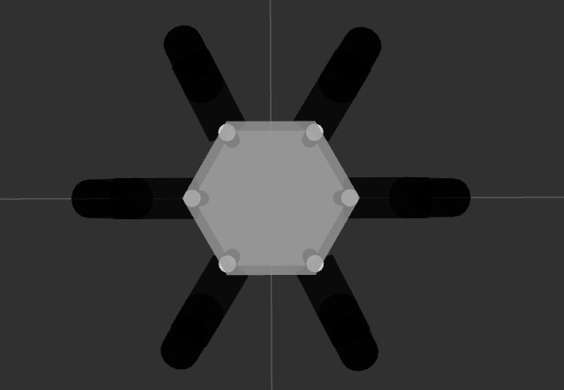
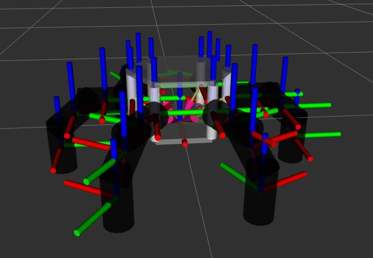
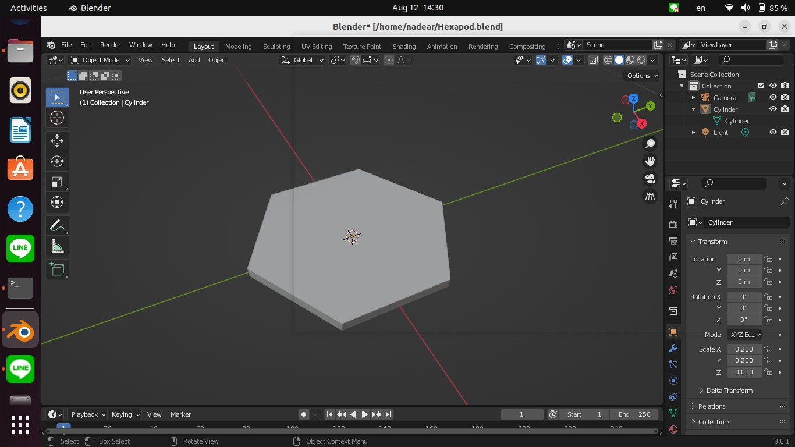
 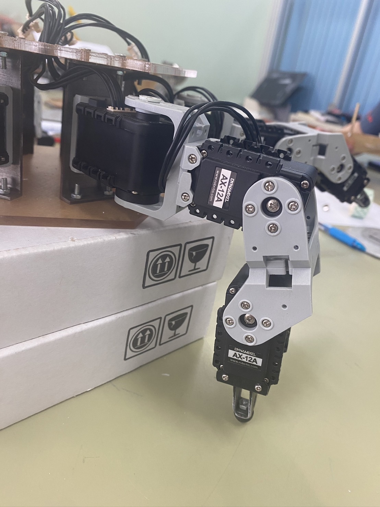
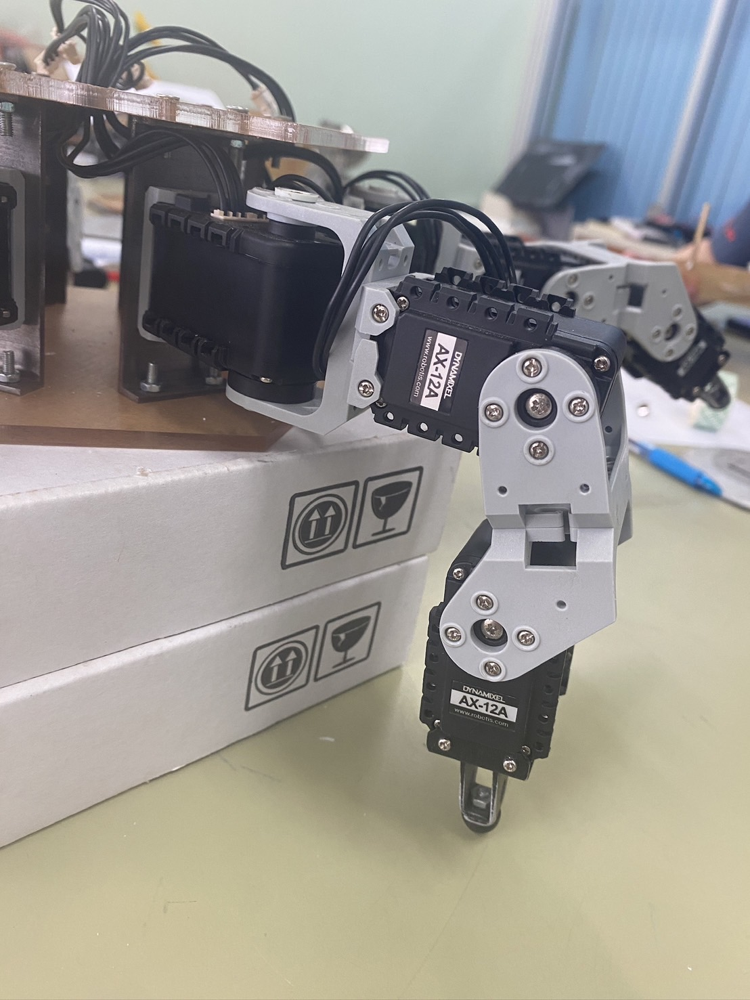
สำหรับโมเดลแมงมุมหุ่นยนต์ 6 ขาฐานหกเหลี่ยมตามต้นแบบ สิ่งที่เพิ่มเข้ามาคือการเพิ่มฐานหกเหลี่ยมเข้ามา 1
อันโดยจำลองด้วยโปรแกรม Blender และส่งออกเป็นไฟล์ urdf
เพื่อจำลองบน Rviz และเพิ่มฐานทรงกระบอกอีก 6
ขาเข้าไปเพื่อยึดกับฐานหกเหลี่ยมดังนั้น
การขยับของส่วนประกอบขาทั้งหมดนั้นจะไม่เหมือนกับ
ในการเคลื่อนที่แบบเชื่อมกับตัวฐานหกเหลี่ยมโดยตรง
แต่จะเชื่อมติดกับขาทรงกระบอกแทน
ดังนั้นแต่ละส่วนประกอบจะมีมุมและองศาในการขยับที่แตกต่างกัน
และตำแหน่งของขาที่เหลือตามมุมต่างๆของฐานที่แตกต่างกัน
ตัวอย่างขาที่ 1 สำหรับการหมุน
ส่วนประกอบตำแหน่งที่ 1
-
หมุนตามแกน Z (ยึดติดกับขาทรงบอก)
ส่วนประกอบตำแหน่งที่ 2 และ 3
-
หมุนตามแกน x